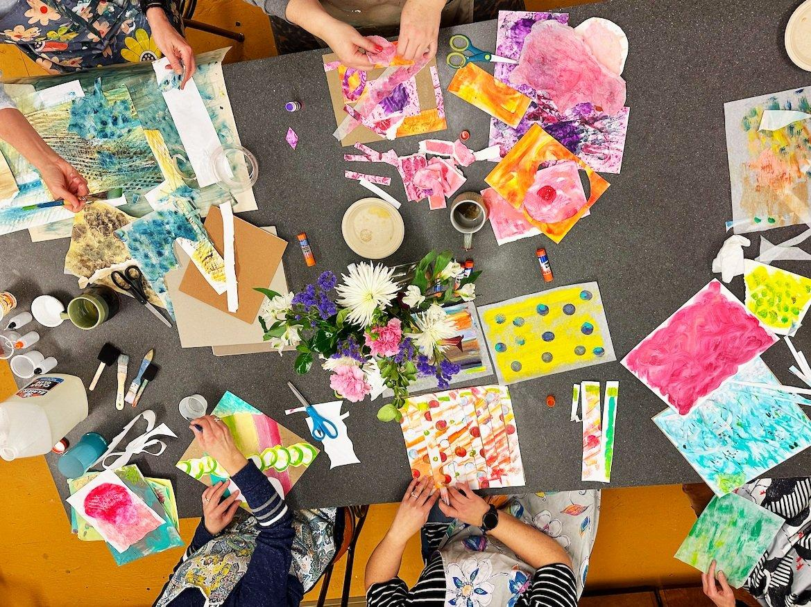
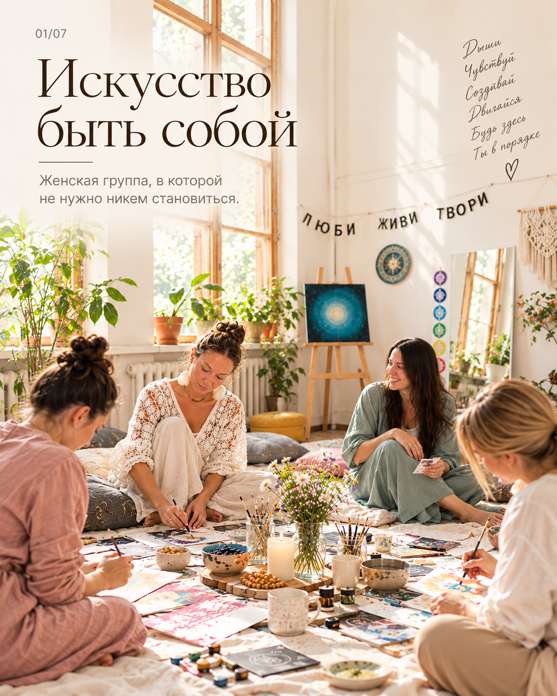

Группы и встречи
Иногда важно не только услышать себя, но и почувствовать, что рядом есть другие люди. В группе можно исследовать чувства и перемены через творчество, разговор или тихое присутствие. Уметь рисовать не нужно.
Для взрослых
Выберите группу, которая вам откликается:

НЕ ТОЛЬКО МАМА
Восемь встреч о том, как оставаться собой, будучи мамой. Через творчество и разговор исследуем материнство, свои потребности и отношения.
Ведущая: Анна Анопова — посмотреть профиль специалиста
О программе
ДЫШУ
Восемь встреч с красками, глиной, коллажами и метафорическими картами. Можно пробовать новое, выражать чувства и просто быть собой.
Ведущая: Анна Анопова — посмотреть профиль специалиста
О программеНА ПОРОГЕ ПЕРЕМЕН
Закрытая онлайн-группа: восемь встреч по два часа. Для женщин и мужчин, переживающих важные перемены. Разговор, поддержка и творческие практики.
О программеЖить после потери
Бережная группа о переживании утраты, памяти, чувствах и возвращении к повседневной жизни — без требований «отпустить» или «двигаться дальше».
Для детей
Рисование, коллажи, работа с материалами и игровые творческие задания. Возраст участников и формат зависят от программы.
Посмотреть программыТворческие встречи для семьи
Время, когда можно побыть вместе за творчеством: рисовать, лепить, играть, придумывать и лучше слышать друг друга. Здесь важен не результат, а совместный опыт.
Посмотреть программыКак проходят встречи
Мы используем коллаж, живопись, работу с бумагой, образами и объёмными материалами. Важен не художественный результат, а собственное исследование. Участники могут делиться впечатлениями, но не обязаны рассказывать больше, чем готовы.
Разговор у маяка
Пространство для бережного разговора и взаимной поддержки. Информация о формате участия и ближайших встречах уточняется.
Предварительная запись на группы
Если какая-то группа вам откликнулась, можно заранее сообщить об интересе. Даты начала пока не объявлены. Выберите программу и удобный формат — мы сможем обсудить детали.